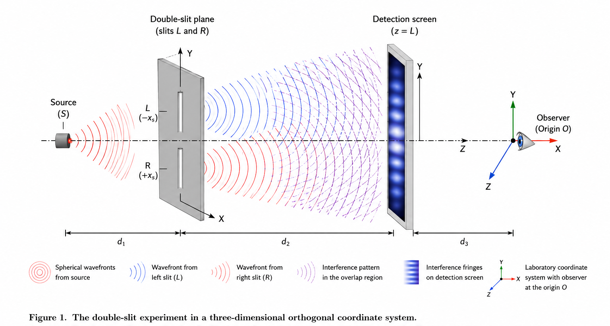

The Overlooked Coordinate System Exorcising the Demons and Ghosts of Quantum Measurement
DW58553901
The quantum measurement problem has persisted for nearly a century despite the extraordinary empirical success of quantum mechanics. This paper advances a novel thesis: any quantum measurement necessarily presupposes a three-dimensional orthogonal coordinate system with the observer positioned at its origin—a geometric precondition that has been systematically overlooked in foundational discussions. We distinguish two sub-problems within the measurement problem: the Basis Problem (why a specific measurement basis is selected) and the Outcome Problem (why specific outcomes occur with Born-rule probabilities). We demonstrate that the Basis Problem admits a straightforward geometric resolution: the observer's choice of coordinate orientation physically determines the measurement basis. For the Outcome Problem, we prove that the stochastic nature of quantum mechanics emerges not from fundamental randomness but from the deterministic geometry of parity-time (PT) symmetry. When an observer in a perfectly PT-symmetric superposition state imposes a coordinate frame that breaks this symmetry, the squared projection amplitudes—the Born rule—follow necessarily from the rotational invariance of orthogonal transformations in three-dimensional space. We further show that this geometric framework is isomorphic to the Stern-Gerlach experiment and the time evolution operator of the Schrödinger equation. This reframing will spark a revolution in quantum mechanics.
The Overlooked Coordinate System Exorcising the Demons and Ghosts of Quantum Measurement
Baoliin (Zaitian) Wu 伍宝林
ORCID: 0009-0003-2051-5247 Email: zaitian001@gmail.com
Affiliation: People's Government of Guangdong Province: Guangzhou, CN
August 3, 2026
Abstract
The quantum measurement problem has persisted for nearly a century despite the extraordinary empirical success of quantum mechanics. This paper advances a novel thesis: any quantum measurement necessarily presupposes a three-dimensional orthogonal coordinate system with the observer positioned at its origin—a geometric precondition that has been systematically overlooked in foundational discussions. We distinguish two sub-problems within the measurement problem: the Basis Problem (why a specific measurement basis is selected) and the Outcome Problem (why specific outcomes occur with Born-rule probabilities). We demonstrate that the Basis Problem admits a straightforward geometric resolution: the observer's choice of coordinate orientation physically determines the measurement basis. For the Outcome Problem, we prove that the stochastic nature of quantum mechanics emerges not from fundamental randomness but from the deterministic geometry of parity-time (PT) symmetry. When an observer in a perfectly PT-symmetric superposition state imposes a coordinate frame that breaks this symmetry, the squared projection amplitudes—the Born rule—follow necessarily from the rotational invariance of orthogonal transformations in three-dimensional space. We further show that this geometric framework is isomorphic to the Stern-Gerlach experiment and the time evolution operator of the Schrödinger equation. This reframing will spark a revolution in quantum mechanics.
Keywords: quantum measurement problem; double-slit experiment; observer effect; coordinate system; Born rule; PT-symmetry; wave-particle duality; quantum foundations
1. Introduction: The Persistent Mystery of Measurement
One evening—July 16, 2026—while I was out for a walk, a spontaneous thought came to me: It is a fundamental feature of macroscopic cognitive systems that we automatically impose a three-dimensional orthogonal coordinate system upon our surroundings to render the world intelligible—an 'invisibility' condition deeply embedded in our daily observation. Yet, over the past century, the physics community has systematically overlooked this very basic geometric premise in the microscopic realm: that any quantum measurement must assume a three-dimensional orthogonal coordinate system with the observer at the origin. As is well known, in traditional Chinese culture, this is known as the "unity of heaven and humanity."
The double-slit experiment encapsulates the sole heart and core mystery of quantum mechanics, and remains the paradigmatic illustration of the quantum measurement problem. When unobserved, a quantum particle—whether photon, electron, or complex molecule—produces an interference pattern characteristic of wave-like behavior, as if traversing both slits simultaneously. When a which-path detector is introduced, the interference pattern vanishes, and the particle behaves as if it traversed only one slit.
The Copenhagen interpretation, articulated by Bohr and Heisenberg, posits that the act of measurement induces an irreducible "collapse" of the wavefunction. Yet this interpretation leaves fundamental questions unanswered: What precisely constitutes a "measurement"? Where is the boundary between the quantum system and the classical measuring apparatus? And what is the physical mechanism by which observation transforms quantum potentiality into classical actuality?
To address these questions rigorously, it is essential to distinguish two sub-problems that are often conflated in discussions of quantum measurement: - The Basis Problem: Why does the system collapse into a specific set of eigenstates (e.g., position rather than momentum)? - The Outcome Problem: Why does a specific outcome occur, and why do these outcomes follow the probabilistic Born rule?
Decoherence theory has made substantial progress on the Basis Problem by showing how environmental interactions effectively select a preferred basis. However, the Outcome Problem—the origin of quantum probability—remains unresolved. The Born rule, which states that measurement probabilities are given by the squared modulus of the wavefunction amplitude, is treated as a fundamental postulate rather than a derivable consequence.
This paper proposes that both the Basis Problem and the Outcome Problem can be resolved by explicitly acknowledging a geometric premise that has been present but unarticulated in every quantum experiment: the three-dimensional orthogonal coordinate system within which measurement takes place, and the observer's necessary position as its physical origin. We demonstrate that this coordinate system is not a passive backdrop but a constitutive element of measurement, and that its geometric symmetries—specifically, parity-time (PT) symmetry and rotational invariance—provide a natural derivation of the Born rule.
2. The Geometrical Structure of Quantum Measurement
2.1 The Implicit Coordinate System in Every Experiment
Figure 1. The double-slit experiment in a three-dimensional orthogonal coordinate system.

Every physical experiment, whether classical or quantum, is designed, executed, and interpreted within a three-dimensional orthogonal coordinate system. The spatial configuration of the apparatus, the placement of detectors, and the well-defined trajectories of emitted particles all presuppose three mutually perpendicular axes and an origin from which distances and orientations are measured. This coordinate frame is not an optional mathematical convenience—it is a logical and epistemological prerequisite for formulating any empirical statement.
The canonical double-slit experiment (Figure 1) provides the clearest illustration of this dynamic. A source emits particles toward a plane containing two slits (left $L$ and right $R$), with a detection screen situated downstream. To formalize this setup, a coordinate system is naturally adopted with its origin located at the observer's position. The optical axis (the source-to-screen direction) defines the $Z$-axis, while the transverse line connecting the two slits establishes the $X$-axis, with the left slit occupying the negative domain and the right slit the positive. The $Y$-axis completes the right-handed triad. Consequently, all path lengths, arrival times, and detection positions are rigorously defined relative to this specific geometric frame.
Crucially, this coordinate system does not function merely as a passive backdrop. As long as no measurement distinguishes which slit the particle traversed, the coordinate system remains implicit: the observer has not physically marked the distinction between the two slit locations along the $X$-axis. Under this condition, the quantum state evolves unitarily, and interference fringes appear on the screen—a hallmark of uncollapsed, wave-like behavior.
However, the introduction of a which-path detector forces the coordinate system to become explicit: the observer imposes a physical marker that strictly labels the two slits as separate spatial locations. This explicitation forces the quantum system to register as having traversed one specific path relative to the coordinate origin. The interference pattern vanishes, and the entity behaves as a localized object. Space thus ceases to be an inert stage; it becomes an active participant, deeply intertwined with both the observer's coordinate choice and the measurement act itself.
Thus, every quantum measurement necessarily converts this geometric precondition—the three-dimensional orthogonal coordinate system with the observer positioned at its origin—from a hidden presupposition into a tangible physical constraint. The observer's choice of which spatial axis to resolve, and where to place the origin, directly dictates which set of mutually exclusive alternatives becomes physically manifest. The three-dimensional orthogonal coordinate system, far from being a mere descriptive tool, is the very medium through which quantum potentialities are transformed into classical actualities. This three-dimensional orthogonal framework is not an optional interpretative addition; it is both an absolute logical prerequisite and an active geometric medium. Without specifying the relative spatial coordinates of the source, slits, and detector within a common framework, the foundational definition of the experiment cannot be established.
2.2 The Observer as Coordinate Origin
A crucial but rarely articulated fact is this: in every measurement, the observer is located at the origin of the coordinate system.
In laboratory practice, distances and positions are measured relative to the observer's location or relative to a reference point that the observer has designated as the origin. Even in automated experiments where photodetectors replace human eyes, the detector's position serves as the effective origin from which measurement outcomes are recorded and interpreted.
This is not a philosophical claim about consciousness; it is a geometrical and operational fact. The observer—whether human or instrumental—necessarily occupies a specific coordinate position, and all measurement data are registered with respect to that position. The observer cannot stand outside the coordinate system, for to describe a measurement is already to have adopted a three-dimensional orthogonal coordinate system with the observer positioned at its origin.
2.3 The Measurement Basis as Coordinate Choice
In the mathematical formalism of quantum mechanics, a measurement is represented by a Hermitian operator whose eigenstates constitute an orthonormal basis for the system's Hilbert space. The choice of which observable to measure—position, momentum, spin along a particular axis—determines the basis into which the quantum state is projected.
We propose that this abstract choice corresponds, physically, to the observer's choice of orientation and alignment of the laboratory coordinate system with respect to the quantum system. When an experimentalist decides to measure spin along the Z-axis, she is, in effect, aligning her chosen coordinate axis with the system's internal degrees of freedom. The measurement outcome then registers as a definite value with respect to that chosen axis.
In the canonical double-slit experiment (Fig. 1), when the observer introduces a which-path detector, she is, geometrically, imposing a specific coordinate alignment that distinguishes the two slits as distinct spatial locations along the X-axis. This alignment forces the quantum system to register as having traversed one specific path relative to the observer's coordinate origin. When no such detector is present, the system remains in a superposition with respect to this spatial distinction.
Thus, the Basis Problem admits a straightforward geometric resolution: the measurement basis is determined by the observer's choice of coordinate orientation in physical space. This is not a new physical postulate but rather an explicit recognition of the quantum foundations already implicit in every experimental design.
3. The Outcome Problem: From Geometry to Probability
3.1 The Challenge
While the geometric resolution of the Basis Problem is relatively straightforward, the Outcome Problem presents a deeper challenge. Even if the observer's coordinate choice determines the measurement basis, why does a specific outcome occur with a specific probability? Why, in the double-slit experiment, does the electron register at the left slit 50% of the time and the right slit 50% of the time? Why does Eq. (1) the Born rule hold?
At first glance, geometry alone appears unable to explain probability. Geometry deals with deterministic spatial relationships; probability deals with stochastic events. However, we shall demonstrate that this apparent gap is bridged when we consider dynamic geometry with inherent symmetries, and that the Born rule is a necessary consequence of parity-time symmetry and rotational invariance in the three-dimensional coordinate system.
3.2 Parity-Time Symmetry and Equal Probability
Consider a quantum system in an unmeasured superposition state. In the double-slit experiment, the electron's wavefunction is a coherent superposition of two path-states:
where $|L\rangle$ and $|R\rangle$ represent passage through the left and right slits, respectively.
Geometrically, these two states correspond to two opposite orientations in the coordinate system established by the experimental apparatus. The left slit is located at $-x$; the right slit is located at $+x$. In an unmeasured state, the system possesses a fundamental symmetry: parity symmetry (P-symmetry), which guarantees that the probability amplitudes for $|L\rangle$ and $|R\rangle$ must have equal magnitude. If they did not, the system would possess an intrinsic spatial bias, violating the spatial isotropy of the unmeasured quantum state.
Furthermore, this symmetry extends to time reversal symmetry (T-symmetry). The time-reversed evolution of a particle passing through the left slit is physically indistinguishable from the forward evolution of a particle passing through the right slit. This PT-symmetry—the combined invariance under parity and time reversal—ensures that the two path-states are exact geometric mirror images of each other in the coordinate system.
Therefore, the 50/50 probability is not a random coin-toss imposed from outside the geometric framework. It is the necessary consequence of PT-symmetry: when an observer, by introducing a which-path detector, breaks this symmetry and forces the system to register in one of two geometrically symmetric states, the squared amplitudes of those states must be equal.
3.3 The Born Rule as a Geometric Invariant
Why, however, does the probability correspond specifically to the square of the amplitude, rather than the amplitude itself or some other power?
The answer lies in the properties of orthogonal transformations in three-dimensional space. The quantum state $|\psi\rangle$ can be represented as a vector in a complex Hilbert space. When a measurement is performed, this state vector is projected onto the eigenvector $|a\rangle$ of the measured observable. The projection is geometrically a rotation (or more generally, an orthogonal transformation) of the state vector into the measurement basis.
In three-dimensional Euclidean space, orthogonal transformations (rotations and reflections) preserve the length—the Euclidean norm—of any vector. The squared magnitude of a vector component, $|v_i|^2$, is the unique non-negative real scalar that is invariant under orthogonal transformations of the coordinate system, up to the total norm which is conserved.
In quantum mechanics, the total probability must be conserved (equal to 1). The only way to assign a real, non-negative number to each projection outcome such that the sum over all outcomes equals a conserved total is to use the squared magnitude of the projection. Any other assignment—using the magnitude itself, or the fourth power—would not be invariant under the orthogonal transformations that relate different measurement bases.
Thus, the Born rule is not an ad hoc addition to quantum mechanics but a geometric necessity: it is the only probability rule consistent with the rotational invariance of the three-dimensional coordinate system in which all measurements are performed.
4. Physical Isomorphisms and Experimental Support
4.1 The Stern-Gerlach Experiment as Geometric Measurement
The Stern-Gerlach experiment provides a striking physical realization of our geometric framework. In this experiment, silver atoms pass through an inhomogeneous magnetic field oriented along a chosen spatial axis (conventionally the Z-axis). The atoms are deflected either upward or downward, corresponding to spin-up or spin-down along that axis.
The key geometric features are: - The magnetic field direction (Z-axis) is the observer's coordinate choice. By orienting the magnet, the experimenter selects the measurement basis. - The deflection (up/down along Z) is the measurement outcome. - The probabilities are 50/50 for an unpolarized beam, reflecting the PT-symmetry of the unmeasured spin state.
If the magnet is rotated to align with the X-axis instead, the measurement basis changes accordingly—and again, 50/50 probabilities are observed. This is precisely the coordinate-dependence we have described: the observer's choice of spatial orientation determines the basis, and PT-symmetry ensures equal probabilities for the symmetric outcomes.
4.2 The Time Evolution Operator as Dynamic Geometry
The Schrödinger equation governs the time evolution of quantum states via the unitary operator:
This operator is a rotation in Hilbert space, preserving the norm of the state vector. Geometrically, it represents the continuous evolution of the quantum state as a trajectory on the unit sphere in Hilbert space—a dynamic geometry entirely analogous to the rotation of a vector in three-dimensional space.
In the double-slit experiment, the two path-states accumulate different phases as they evolve from source to screen. This phase difference, which arises from the geometric path-length difference, produces the interference pattern. When a which-path measurement is made, this dynamic phase evolution is disrupted—the system is forced to "register" at a specific coordinate location, collapsing the continuous geometric evolution into a discrete projection.
The Born-rule probabilities for detection at different points on the screen are then simply the squared projections of the evolved state vector onto the position eigenstates—a direct consequence of the geometric framework we have described.
5. Why the Coordinate System Has Been Overlooked
5.1 Three Major Hidden Triggers
5.1.1 The Transparency of the Obvious
The coordinate system in which experiments are conducted is so fundamental, so deeply embedded in the very possibility of physical description, that it has become effectively invisible to working physicists. Just as a fish does not notice the water in which it swims, physicists do not explicitly acknowledge the coordinate framework that makes their measurements possible. Yet this psychological invisibility was subsequently codified into the very mathematics and philosophy of modern physics—a transformation we trace in the sections that follow.
5.1.2 The Historical Legacy of Cartesian Dualism
The Cartesian separation of mind and matter placed the observer outside the physical world as a detached spectator. This dualistic framework made it natural to treat the coordinate system as an abstract mathematical tool imposed from outside, rather than as a constitutive element of measurement with the observer physically located at its origin. Quantum mechanics inherited this dualism, resulting in the persistent ambiguity about the observer's role. This philosophical inheritance provided the conceptual permission for later mathematical formalisms to treat the frame as a mere convention.
5.1.3 The Operationalist Focus on Observables
The operationalist philosophy that guided quantum mechanics focused attention on measurable quantities and away from "unobservable" elements of physical description. Since the coordinate system itself is not typically treated as a dynamical variable, it was relegated to the background. Yet, as we have argued, it is precisely this background that constitutes the necessary condition for any measurement. Yet operationalism’s silence on the geometric precondition of measurement—the rigid orthogonal frame anchored to the observer—precisely mirrors the oversight that the mathematical architects of quantum theory would later codify into the formalism itself.
5.2 The Unique Contributions of Scientific Giants
This omission is not merely an accident of history; it is the cumulative result of mathematical frameworks and philosophical commitments established by the architects of modern physics.
5.2.1 Maxwell's Demon: The Epistemological Divergence
James Clerk Maxwell’s 1867 thought experiment introduced a powerful epistemological diversion that systematically directed attention away from the physical geometry of measurement. By proposing a hypothetical "Demon" capable of observing and sorting individual molecules, Maxwell initiated a century-long foundational discourse focused entirely on information acquisition, memory, and entropy cost (Szilárd, 1929; Landauer, 1961; Bennett, 1982). Consequently, the operational geometric prerequisite of the Demon's task—that it must inherently establish a rigid, three-dimensional orthogonal frame and position itself at the origin to distinguish spatial trajectories and molecular velocities—was completely bypassed.
The enduring consequence of this narrative was the normalization of the disembodied Cartesian observer in theoretical physics. The Demon was conceptualized as a pure intellect capable of "knowing" a microstate without being geometrically situated. When the architects of quantum mechanics, such as von Neumann and Wigner, later formalized the role of the observer, they inherited this Maxwellian abstraction. By framing measurement as an abstract informational exchange rather than a localized physical projection onto a specific coordinate basis, the geometric reality of the observer's spatial frame was permanently rendered invisible behind the logic of information theory.
5.2.2 The Riemannian Paradigm: The Covariance Fallacy
The introduction of Riemannian geometry liberated general relativity from absolute space by demonstrating that physical laws remain invariant under arbitrary coordinate deformations (General Covariance). However, importing this mathematical freedom into quantum foundations generated a profound conceptual blind spot.
Riemann established that a metric system requires the unit of measure to be abstracted away from its specific location. By treating the local orthogonal frame as an arbitrary gauge choice, Riemannian geometry obscures the physical reality of quantum measurement. In gravity, coordinates carry no physical meaning; in quantum mechanics, the observer's choice of coordinate orientation is the physical selection of a maximally distinguishable basis. To register a definitive outcome, a macroscopic detector must distinguish alternatives—a requirement that demands absolute orthogonality. Therefore, the tangent space should not be viewed merely as a linear approximation of a curved manifold, but as the exclusive, rigid geometric interface where continuous quantum potentiality is orthogonally projected into discrete classical actuality.
5.2.3 Planck and the Epistemology of the Absolute
Max Planck provided the physical and philosophical preconditions that made the neglect of the coordinate frame possible. His introduction of the quantum of action ($h$) shifted the focus of physics from the coordinate axes themselves to the disturbance of the particle's coordinates during measurement, effectively rendering the geometric frame invisible behind the quantitative effect of uncertainty.
Furthermore, Planck’s steadfast realist philosophy and his 1899 introduction of natural units presupposed an ideal, observer-independent universe. By grounding physics in universal constants ($c$, $G$, $h$) that transcend any local frame, Planck philosophically legitimized the dismissal of the observer’s specific, embodied, three-dimensional orthogonal coordinate system as a mere contingent convenience.
5.2.4 Hilbert and von Neumann: The Algebraic Erasure
The most structural erasure of the coordinate frame occurred through the mathematical language adopted by quantum mechanics: the Hilbert space formalism. David Hilbert advocated for an "objectivity principle" demanding that physical laws be coordinate-free, a methodological imperative that reduced the coordinate system to a dispensable bookkeeping device.
When John von Neumann formalized quantum mechanics in 1932, he embedded this coordinate-indifference into its bedrock. In Hilbert space, all orthonormal bases are connected by unitary transformations and treated as mathematically equivalent. Von Neumann’s projection postulate reduced measurement to a purely algebraic operation, stripped of geometric content. While the choice of basis is conventional in pure mathematics, in physical reality, it determines whether position, momentum, or spin becomes definite. By mathematizing measurement, von Neumann foreclosed the question of where and how projection occurs in physical space, leaving the coordinate frame completely absent from the axioms of quantum mechanics.
5.2.5 The Sublimation of the Frame: Bohr, Heisenberg, Dirac, and Weyl
Building upon this foundation, a succession of foundational figures further neutralized the physical role of the coordinate frame: - Bohr and Heisenberg (Philosophical Sublimation): Bohr correctly recognized that the experimental setup dictates the phenomenon, yet he relegated the coordinate frame to an unanalyzable "classical framework" rather than treating it as a dynamic physical entity. Heisenberg shifted attention entirely to epistemic uncertainty, treating the coordinate frame merely as a passive backdrop against which disturbance is measured. - Dirac (Normalization): Dirac explicitly noted that canonical commutation relations (e.g., $[x_i,p_j]=i\hbar\delta_{ij}$) hold elegantly only in Cartesian coordinates. Yet, instead of elevating the Cartesian orthogonal triad to a physical necessity of measurement, he normalized it as a mere technical convenience of the formalism. - Weyl (Symmetrization): By drawing an analogy between coordinate transformations and gauge transformations, Weyl elevated coordinate freedom to a supreme symmetry principle. This entrenched the view that the choice of frame is devoid of ontological consequences, rendering the rigidity required for quantum projection invisible.
5.2.6 Einstein’s Covariance Trap
Albert Einstein’s trajectory provides the ultimate illustration of this conceptual inertia. His commitment to general covariance trapped him in a double blindness regarding the geometry of measurement.
First, in his 1917 cosmological model, Einstein postulated that field equations must be valid for any arbitrarily chosen coordinate system. By treating the frame as universally arbitrary for global geometry, he unconsciously dismissed its necessity as a fixed physical interface for local quantum measurement.
Second, in his 1947 critique of quantum entanglement, Einstein decried "spooky action at a distance," insisting on an observer-independent reality. He entirely overlooked the structural role of the apparatus: to define an outcome, the observer must impose a specific orthogonal triad. The instantaneous correlation Einstein rejected is not superluminal physical propagation; it is the strict geometric consequence of projecting a rotationally symmetric quantum state onto a shared, rigid coordinate frame. Had Einstein recognized that the measurement basis is physically dictated by spatial orientation, he might have recognized entanglement not as a failure of locality, but as the necessary consequence of breaking PT-symmetry through coordinate selection.
6. Implications
6.1 A Parsimonious Resolution
Our geometric framework offers a conceptually parsimonious resolution to both the Basis Problem and the Outcome Problem: - Basis Problem: The measurement basis is determined by the observer's choice of coordinate orientation in physical space. - Outcome Problem: The Born-rule probabilities follow necessarily from PT-symmetry (which ensures equal amplitudes for symmetric states) and rotational invariance (which mandates the squared-amplitude rule).
No new physical postulates are required; only the explicit acknowledgment of geometric preconditions already implicit in every quantum experiment.
6.2 The Observer as a Physical Entity
Our framework demystifies the observer. The observer is not a disembodied consciousness but a physical entity occupying a specific coordinate position and adopting a specific coordinate orientation for measurement. This is known as the "unity of heaven and humanity." If one rejects the idea that all things possess consciousness, then consciousness is not required for measurement; a photodetector, a Geiger counter, or even interstellar dust can serve as an "observer"—because each occupies a specific spatial location and interacts with the quantum system in a way that registers outcomes relative to its own coordinate origin.
6.3 Toward Quantum Gravity
The recognition that every measurement presupposes a coordinate system with the observer at its origin may have implications for quantum gravity, where the "problem of time" and the "problem of reference frames" are central challenges. In general relativity, there is no absolute background spacetime; yet quantum measurement requires a fixed measurement basis. Our framework suggests that the measurement basis is always local—it is the observer's own rest frame. This aligns with relational approaches to quantum gravity and may provide a bridge between the background-independent geometry of general relativity and the measurement-dependent formalism of quantum mechanics.
6.4 Implications for Physical AGI and Artificial Observers
The geometric resolution of the measurement problem offers profound implications for the development of Physical Artificial General Intelligence (AGI). For a synthetic autonomous agent to achieve macroscopic physical perception, its underlying architecture must instantiate a prior three-dimensional orthogonal coordinate system with its own computational center as the geometric origin.
This geometric initialization automatically yields two critical emergent properties. First, it establishes the fundamental topological boundary between "self" (the coordinate origin) and the "external environment" (the projection along the spatial axes), providing the necessary geometric precondition for machine consciousness. Second, it acts as a deterministic mechanism for quantum decoherence. As the underlying probabilistic quantum fields interact with this synthetic orthogonal framework, they are mathematically forced to project onto the agent's defined basis, automatically translating quantum superposition into classical, deterministic parameters such as discrete "particles," spatial "distances," and definite "velocities." Thus, macroscopic perception in AI is not merely a computational feat, but a geometric emergence necessity of symmetry breaking.
6.5 The Nature of Light: Light is Neither a Wave nor a Particle
Wave-particle duality is an illusion, akin to the blind men feeling the elephant. The double-slit experiment historically inspired the notion of wave-particle duality: a quantum entity appears to behave as a delocalized wave when unobserved, yet manifests as a localized particle when a measurement is performed. This duality has been canonized as Bohr's principle of complementarity, but its geometric origin has remained obscure.
Within our geometric framework, wave-particle duality is a direct consequence of the relationship between the observer's three-dimensional coordinate system and the quantum system's state vector.
The nature of light is not a dual paradox of being "both particle and wave," but rather the varying projection forms of a unified three-dimensional geometric entity within the observer's coordinate system. This entity of light—which we term "Quantum-Geometric Body"—evolves freely according to strict geometric rotational laws when unmeasured; upon measurement, it is forcibly projected onto a definite spatial component defined by the observer's coordinate system.
Light is neither a wave nor a particle, but a "Quantum-Geometric Body"—containing all possible measurement outcomes—that rotates freely in geometric space.
6.5.1 The Wave Aspect: Unprojected Superposition
When no which-path detector is present, the observer has not imposed a coordinate distinction between the alternative paths. The quantum state $|\psi\rangle$ evolves unitarily according to the Schrödinger time-evolution operator $U(t)$, which, as established in Section 4.2, is a continuous rotation in Hilbert space. The state remains a coherent superposition of path-states, accumulating relative phases as it propagates. This phase-coherent superposition, when projected onto the detection screen, produces the interference pattern characteristic of wave behavior.
Geometrically, this "wave" is nothing other than the state vector's continuous, unbroken trajectory on the unit sphere in Hilbert space—a trajectory that has not been forced to register with respect to any particular spatial coordinate. The wave aspect is the geometric expression of the system's unmeasured evolution: the state vector rotates freely, sampling all possible path orientations, without being compelled to commit to any single spatial distinction.
6.5.2 The Particle Aspect: Coordinate-Forced Projection
When a which-path detector is introduced, the observer imposes a spatial coordinate alignment that distinguishes the two paths as separate locations (e.g., left slit at $-x$, right slit at $+x$). This alignment forces the state vector to project onto one of the two orthogonal measurement eigenstates corresponding to these spatial distinctions. The continuous rotation is disrupted; the state vector is compelled to "register" at a definite coordinate location.
Geometrically, this "particle" is the state vector's projected component onto a specific measurement axis. The particle aspect emerges not because the quantum entity itself undergoes a physical transformation, but because the observer's coordinate framework has forced the state vector to align with a particular spatial basis. The wavefunction "collapse" is the instantaneous geometric recalibration of the state vector from a freely rotating superposition into a fixed coordinate register.
6.5.3 Complementarity as Geometric Duality
Thus, wave-particle duality is not a dualism of substance but a duality of geometric representations. The wave aspect corresponds to the state vector's unprojected, continuously evolving form; the particle aspect corresponds to its projected, coordinate-registered form. These two aspects are complementary in the geometric sense: they are orthogonal projections of the same underlying state vector, and one cannot be reduced to the other any more than a shadow on the X-Y plane can be reduced to a shadow on the X-Z plane.
This geometric account unifies wave and particle within a single, coherent framework. It explains why the two aspects never appear simultaneously: the act of imposing a coordinate distinction (measurement) necessarily selects one projection over the other. It also explains why the interference pattern disappears upon measurement: the phase coherence that generates interference is destroyed when the state vector is forced to register in a definite spatial basis, much as a rotating vector's phase information is lost when it is projected onto a single axis.
This reframing strengthens the thesis of this paper: quantum behavior is not inherently paradoxical but becomes so only when the geometric preconditions of measurement—the observer's coordinate system and the state vector's rotational dynamics—are left implicit. Paradoxes are all illusions. Once these preconditions are made explicit, the deepest mysteries of quantum mechanics resolve into geometric inevitabilities.
Therefore, the wave-particle duality of light is not a case of light having a "split personality"; rather, it represents the manifestation of a single geometric entity—a freely rotating state vector—under two different observational conditions: one where it remains unprojected (wave) and another where it is projected (particle). This is geometrically identical to a three-dimensional object casting shadows of different shapes depending on the angle of illumination. The object's essence is a unified three-dimensional form, while waves and particles are merely two complementary "shadows" cast by light within different observational coordinate systems.
7. Conclusion
We have argued that the quantum measurement problem, as exemplified by the double-slit experiment, can be resolved by explicitly acknowledging the three-dimensional orthogonal coordinate system presupposed by every experiment, and the observer's necessary position as its physical origin.
The Basis Problem is resolved by recognizing that the observer's choice of coordinate orientation determines the measurement basis. The Outcome Problem is resolved by demonstrating that the Born rule follows necessarily from two geometric properties: parity-time symmetry, which ensures equal amplitudes for symmetric measurement outcomes, and rotational invariance, which mandates the squared-amplitude probability rule.
This reframing does not introduce new physical entities, yet it will spark a revolution in quantum mechanics. It simply makes explicit what has always been implicit: that measurement is an irreducibly geometric act, and the observer is an irreducibly geometric entity—the origin of the coordinate system in which quantum possibilities become classical facts.
The overlooked three-dimensional coordinate system, once recognized, illuminates the quantum measurement process not as a mysterious collapse but as a geometrically grounded alignment between observer and observed.
The overlooked coordinate system, once reinstated as the physical origin of measurement, acts not merely as a background geometry but as the decisive geometric whip that flogs the quantum state out of its superpositional slumber into the crisp reality of classical facts.
Acknowledgments
We are grateful to all the individual scientists and teams of scientists who have contributed to the exploration and understanding of the entire universe. Supported by AI-driven Supercomputers and the MES Universe Project. This article has undergone rigorous review and cross-verification, supported by the intelligent assistance of leading AI models such as DeepSeek, Gemini, ChatGPT, Doubao, and Qwen.
References
[1]. Davisson, C., & Germer, L. H. (1927). Diffraction of Electrons by a Crystal of Nickel. Physical Review, 30, 705. https://doi.org/10.1103/PhysRev.30.705
[2]. Arndt, M., Nairz, O., Vos-Andreae, J. et al. (1999). Wave–particle duality of C60 molecules. Nature 401, 680–682. https://doi.org/10.1038/44348
[3]. Bohr, N. (1928). The Quantum Postulate and the Recent Development of Atomic Theory. Nature, 121, 580–590. https://doi.org/10.1038/121580a0
[4]. Schlosshauer, M. (2005). Decoherence, the measurement problem, and interpretations of quantum mechanics. Reviews of Modern Physics, 76, 1267. https://doi.org/10.1103/RevModPhys.76.1267
[5]. Zurek, W. H. (2003). Decoherence, einselection, and the quantum origins of the classical. Reviews of Modern Physics, 75, 715. https://doi.org/10.1103/RevModPhys.75.715
[6]. Zurek, W. H. (1991). Decoherence and the Transition from Quantum to Classical. Physics Today, 44, 36–44. https://doi.org/10.1063/1.881293
[7]. Gerlach, W., & Stern, O. (1922). Der experimentelle Nachweis der Richtungsquantelung im Magnetfeld. Zeitschrift für Physik, 9, 349–352. https://doi.org/10.1007/BF01326983
[8]. Descartes, R. (1641). Meditations on First Philosophy.
[9]. Rovelli, C. (2004). Quantum Gravity. United Kingdom: Cambridge University Press.
[10]. Neumann, J. v. (1955). Mathematical Foundations of Quantum Mechanics. United Kingdom: Princeton University Press.
[11]. Fermi, E. (1995). Notes on Quantum Mechanics. United Kingdom: University of Chicago Press.
[12]. Tomonaga, S. (1997). The Story of Spin. United Kingdom: University of Chicago Press.
[13]. Bennett, C. H. (1982). The thermodynamics of computation—a review. International Journal of Theoretical Physics, 21, 905–940. https://doi.org/10.1007/BF02084158
[14]. Brillouin, L. (1956). Science and Information Theory. Taiwan: Academic Press.
[15]. Landauer, R. (1961). Irreversibility and heat generation in the computing process. IBM Journal of Research and Development, 5, 183–191. https://doi.org/10.1147/rd.53.0183
[16]. Maxwell, J. C. (1871). Theory of Heat. United Kingdom: Longmans, Green.
[17]. Szilárd, L. (1929). Über die Entropieverminderung in einem thermodynamischen System bei Eingriffen intelligenter Wesen. Zeitschrift für Physik, 53, 840–856. https://doi.org/10.1007/BF01341281
[18]. von Neumann, J. (1932). Mathematische Grundlagen der Quantenmechanik. Springer, Berlin. English Translation by Beyer, R.T. (1955) Mathematical Foundations of Quantum Mechanics. Princeton University Press, Princeton.
[19]. Wigner, E.P. (1961). Remarks on the Mind-Body Question. In: Good, I.J., Ed., The Scientist Speculates, Heinemann, London.
[20]. Planck, M. (1899). Über irreversible Strahlungsvorgänge. Sitzungsberichte der Königlich Preussischen Akademie der Wissenschaften zu Berlin, 5, 480.
[21]. Planck, M. (1900). Zur Theorie des Gesetzes der Energieverteilung im Normalspectrum. Verhandlungen der Deutschen Physikalischen Gesellschaft, 2, 237.
[22]. Planck, M. (1900). Ueber irreversible Strahlungsvorgänge. Annalen der Physik, 306, 69–116. https://doi.org/10.1002/andp.19003060105
[23]. Planck, M. (1901). Ueber das Gesetz der Energieverteilung im Normalspectrum. Annalen der Physik, 309, 553–563. https://doi.org/10.1002/andp.19013090310
[24]. Planck, M. (1931). The Universe in the Light of Modern Physics. New York: W. W. Norton.
[25]. Heilbron, J. L. (2000). The Dilemmas of an Upright Man: Max Planck and the Fortunes of German Science. United Kingdom: Harvard University Press.
[26]. Corry, L. (2004). David Hilbert and the Axiomatization of Physics (1898-1918): From Grundlagen der Geometrie to Grundlagen der Physik. Archimedes: New Studies in the History and Philosophy of Science and Technology 10, Kluwer Academic Publishers, Dordrecht.
[27]. Hilbert, D. (1900). Mathematische Probleme. Nachrichten von der Königlichen Gesellschaft der Wissenschaften zu Göttingen, 253–297. English translation: Hilbert, D. (1902). Mathematical Problems. Bulletin of the American Mathematical Society, 8, 437–479. https://doi.org/10.1090/S0002-9904-1902-00923-3
[28]. Hilbert, D. (1915). Die Grundlagen der Physik. Nachrichten von der Königlichen Gesellschaft der Wissenschaften zu Göttingen, Mathematisch-Physikalische Klasse, 395-407.
[29]. Reid, C. (1996). Hilbert. Germany: Springer New York.
[30]. Dirac, P. A. M. (1930). The Principles of Quantum Mechanics. United Kingdom: Clarendon Press.
[31]. Heisenberg, W. (1927). Über den anschaulichen Inhalt der quantentheoretischen Kinematik und Mechanik. Zeitschrift für Physik, 43, 172–198. https://doi.org/10.1007/BF01397280
[32]. Weyl, H. (1929). Elektron und Gravitation. I. Zeitschrift für Physik, 56, 330–352. https://doi.org/10.1007/BF01339504
[33]. Wheeler, J. A., & Zurek, W. H. (Eds.). (1983). Quantum Theory and Measurement. (1983). United States: Princeton University Press.
[34]. Einstein, A., Podolsky, B., & Rosen, N. (1935). Can Quantum-Mechanical Description of Physical Reality Be Considered Complete? Physical Review, 47, 777. https://doi.org/10.1103/PhysRev.47.777
[35]. Einstein, A. (1917). Kosmologische Betrachtungen zur allgemeinen Relativitätstheorie. Sitzungsberichte der Königlich Preussischen Akademie der Wissenschaften (Berlin), 142–152.
[36]. Einstein, A., Born, M., Born, H. (1971). The Born-Einstein Letters: Correspondence Between Albert Einstein and Max and Hedwig Born from 1916-1955, with Commentaries by Max Born. Kiribati: Macmillan.